Computational imaging and inverse problems#
In 1971 the first X-ray Computed tomography machine is installed in the Atkinsons Morley Hospital, Wimbledon, Great Britain. The CT generated images were obtained by a specially designed algorithm, since no viable method existed.
{kind=link}
{kind=link}
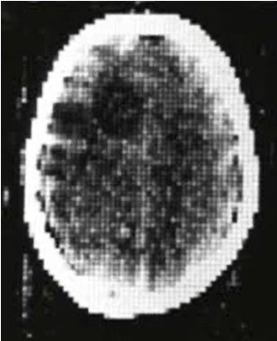
April 10, 2019. The first image of a black hole by means of the Event Horizon telescope. The image was constructed from enormous quantities of data collected all around the world with an algorithmic computation.
{kind=link}
{kind=link}
What is Computational Imaging?#
chatgpt Computational imaging is an approach to imaging where image formation is shared between hardware and algorithms rather than being done purely by optics.
gemini In simple terms, computational imaging (CI) is a shift from traditional “what you see is what you get” photography to a process where the final image is “computed” rather than just captured
wikipedia Computational imaging is the process of indirectly forming images from measurements using algorithms that rely on a significant amount of computing. In contrast to traditional imaging, computational imaging systems involve a tight integration of the sensing system and the computation in order to form the images of interest.
AI overview Computational imaging merges advanced hardware (sensors, optics) with sophisticated algorithms to overcome traditional optical limits, creating superior images from encoded, often non-traditional, data.
My definition Computational imaging refers to imaging systems where the measured data are not images themselves, but indirect, encoded, or incomplete measurements that are transformed into images through computational algorithms.
{kind=link}
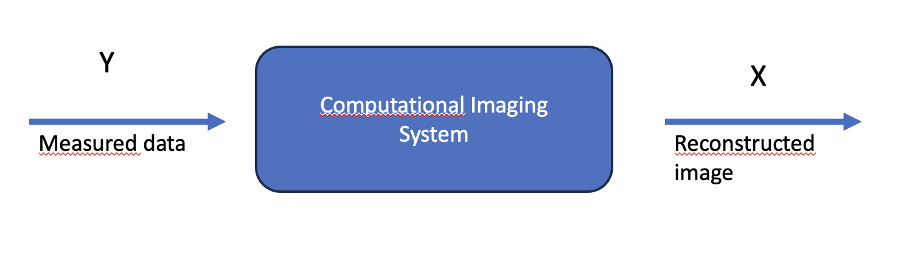
Computational imaging as an inverse problem#
Computational imaging is the formulation of image formation as an inverse problem, where an unknown image or object x is estimated from measured data y by inverting a forward (or direct) model: $\(y=\mathcal{F}x+e\)\( The imaging physics is modelled by the operator \)\mathcal{F}$.
What is an inverse problem?
Keller: We call two problems inverse one another if the formulation of the each involves part or all the formulation of the other.
The problem that is more extensively studied is usually called forward (or direct) , the other is called inverse.
The direct problem is usually oriented along a cause-effect, in the sense that it computes the effect given the cause.
The inverse problem is associated with the reversal of the cause-effect and consists in finding the causes given the effects.
In instrumental physics, the direct problem is the measure of the object, obtained by the instrument, whereas the inverse problem consists in determining the object given the measure.
In direct problems usually there is a loss of information from the input to the output. Hence, in the solution of the inverse problem it is impossible to recover the object exactly, due to the information lost in the direct one.
{kind=link}
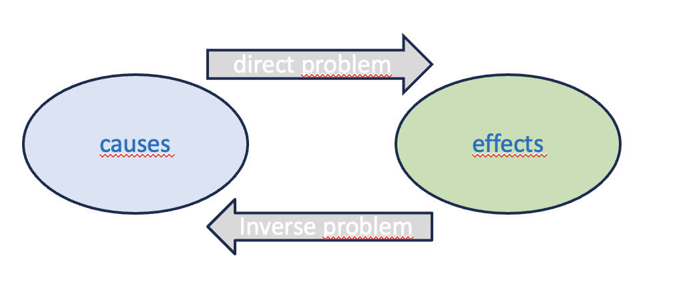

Linear inverse imaging problems#
Linear inverse imaging problems are characterized by a linear model describing the relationship between the measured data y and the unknown object x.
The direct linear model can be expressed as:
$\(Ax=y\)$
where A is a matrix representing the linear operator acting on the image x to generate the data y.
Since the unknown object represented as an image, in the previous model we suppose to reshape the image into an array x following a lexicographical order, and the data into an array y.
Data are usually affected by noise, due to different physical processes. For the moment, we can consider additive noise so that the final forward model is: $\(Ax=y+e\)$ The noise is a random process described by a random variable.
{kind=link}
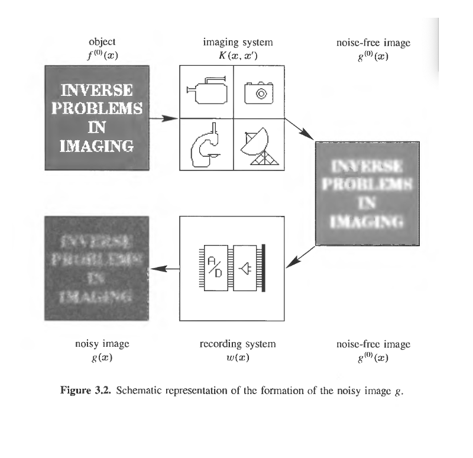
Examples of imaging systems
In general these different imaging systems are modelled by a different matrix \(K\).
Optical imaging systems
{kind=link}
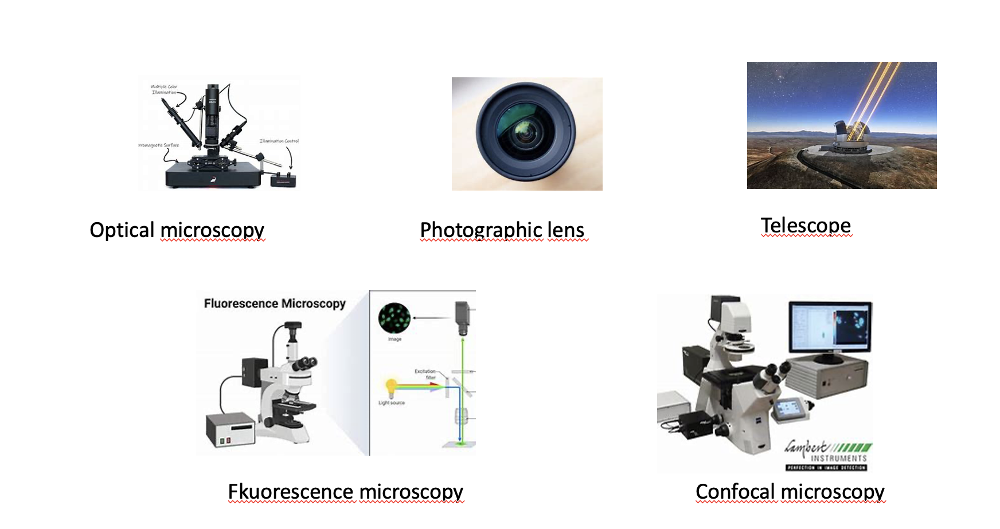
Medical imaging systems
{kind=link}
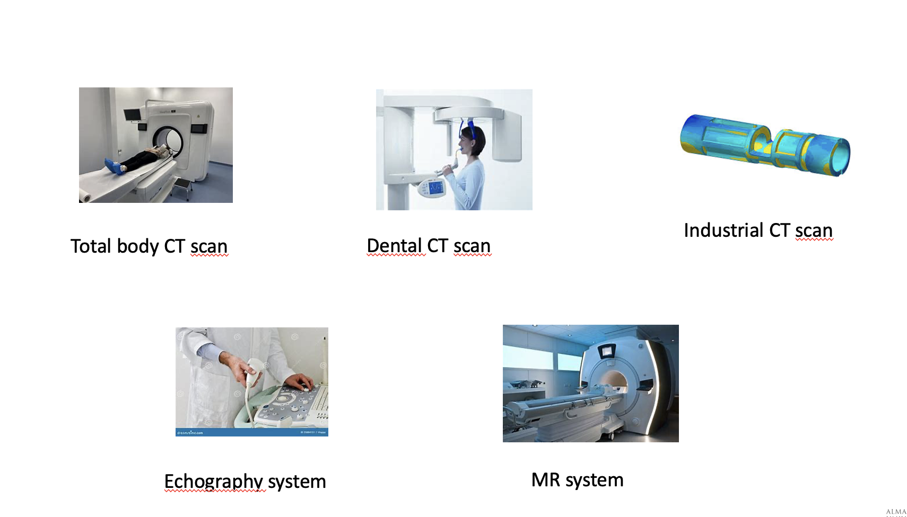
Other imaging systems
{kind=link}
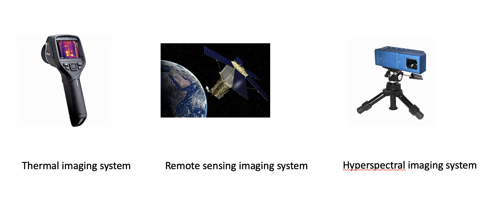
Examples of linear computational imaging applications (modelled by linear inverse problems)
Image denoise
The aim is to remove noise from the acquired image by means of an algorithm that is more complex hat a simple low-pass filter.
{kind=link}
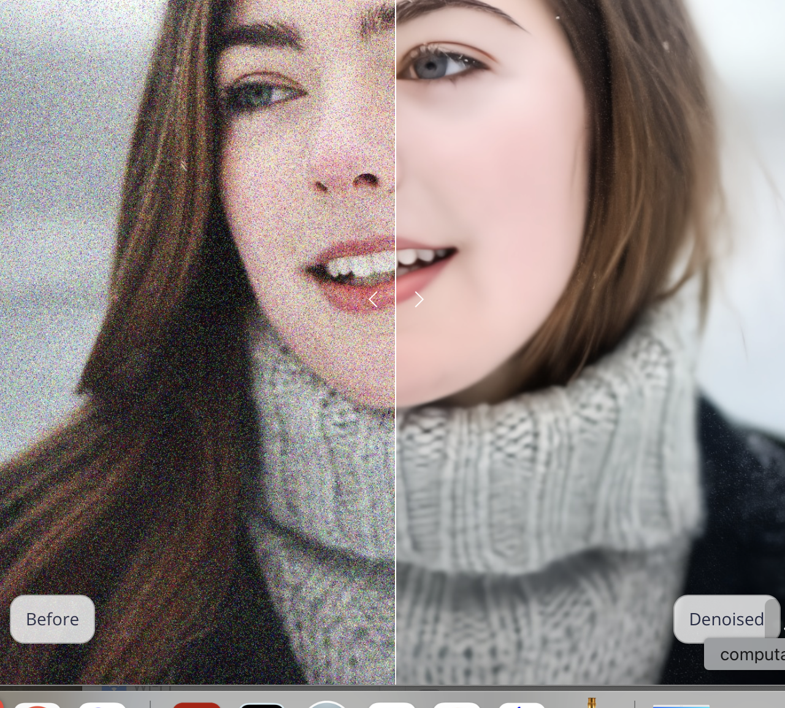
Image deblur
The aim is to remove the blur present on the recorded image, usually due to lens imperfection or to the relative movement between the source anc the object.
{kind=link}
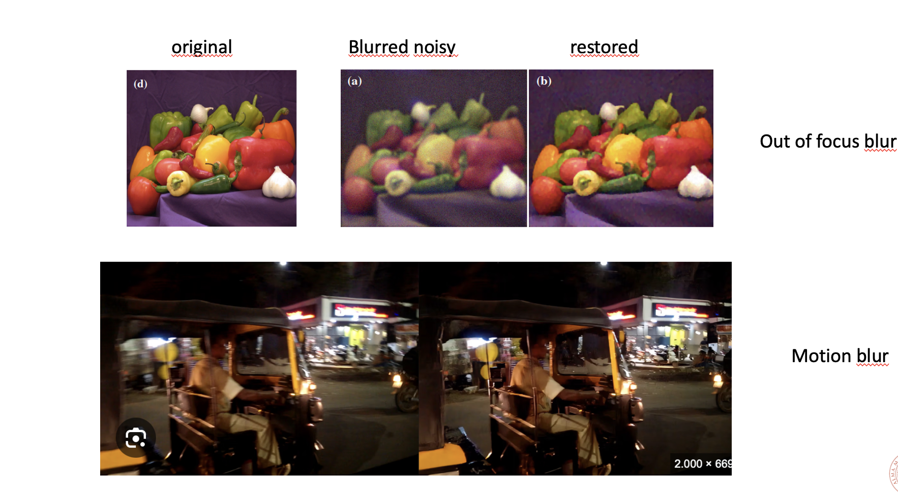
Image superesolution: microscopy
The aim is to improve the resolution (i.e. the image size, equivalnet to reduce the pixel size) of the recorded coarse image.
{kind=link}
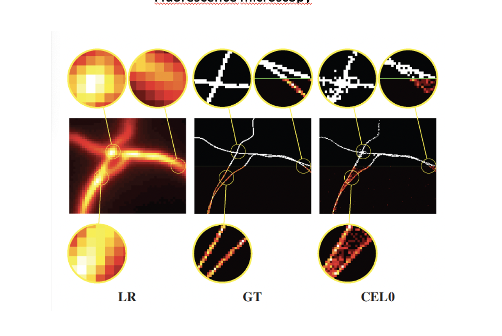
Image superesolution: photography
{kind=link}
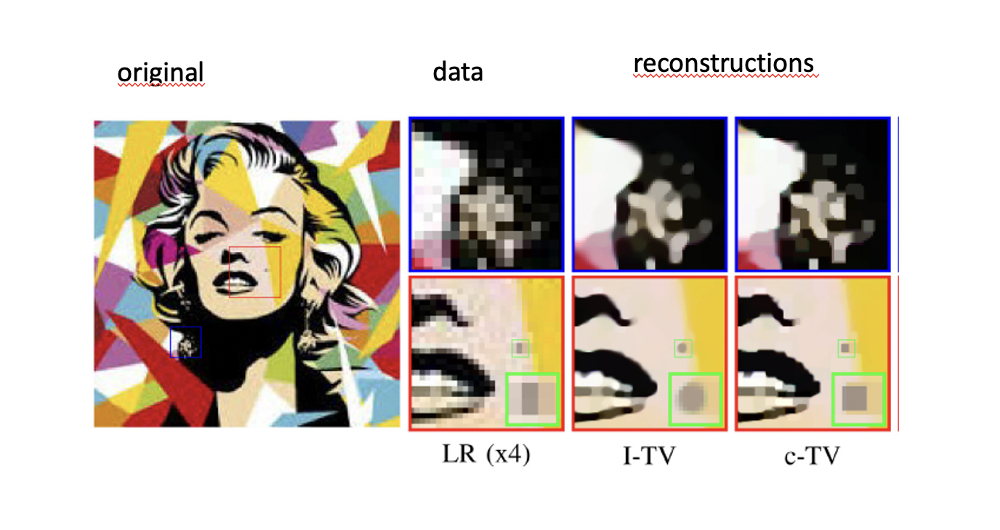
Image inpainting
The aim is to repair the recorded damaged image by substituting coherent information in place of the corrupted one.
{kind=link}
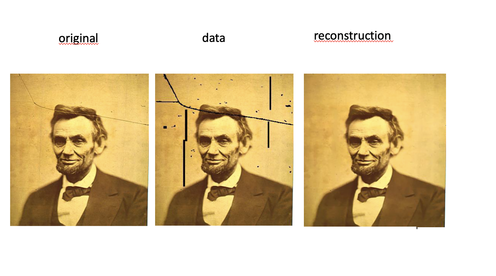
Medical image reconstruction: computed tomography
The aim is to create the image of the object (part of the body or other different objects) from the recorded data that are not images but counting of photons.
{kind=link}
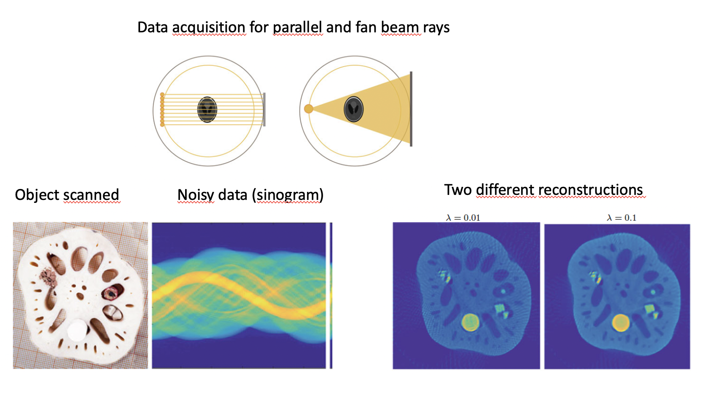
Medical image reconstruction: Magentic Resonance
The aim is to create the image of the object (part of the body) from the recordeed data that are frequencies on the Fourier space along predefined directions or paths.
{kind=link}
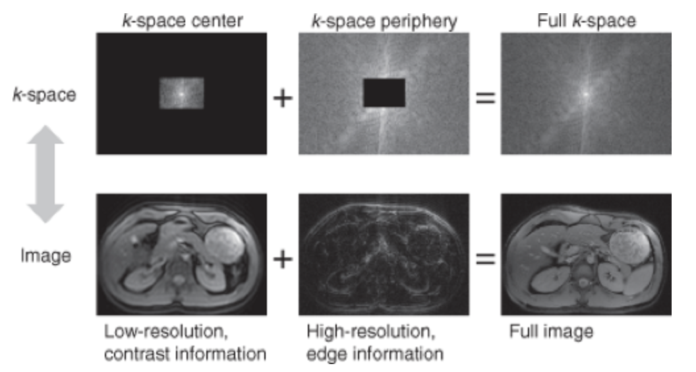
The solution of the inverse problem requires to find the exact image x representing the object given the data \(y\) and the matrix \(A\) representing the physics of the imaging instrument.
{kind=link}
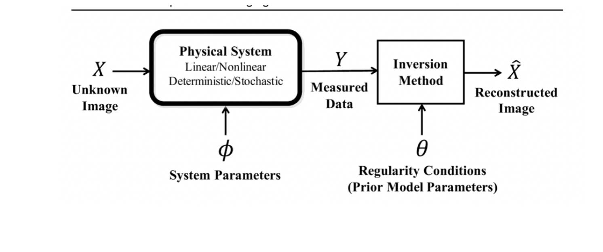
Why are so important algorithms for the solution of inverse problems in imaging ?
inverse problems are ill-posed
imaging deals with large data
imaging applications often requires a fast solution
Inverse problems are ill-posed#
What is a well posed problem?
A problem is defined well-posed if:
it exists a solution for arbitrary data
this solution is unique.
the solution continuously depends on the data. This means that it small varies for small variations of the data.
The direct problem is in general well posed (this comes from physical considerations)
What is an ill posed problem?
A problem where at least one of the three conditions is not satisfied.
Linear inverse imaging problems are ill-posed.
{kind=link}
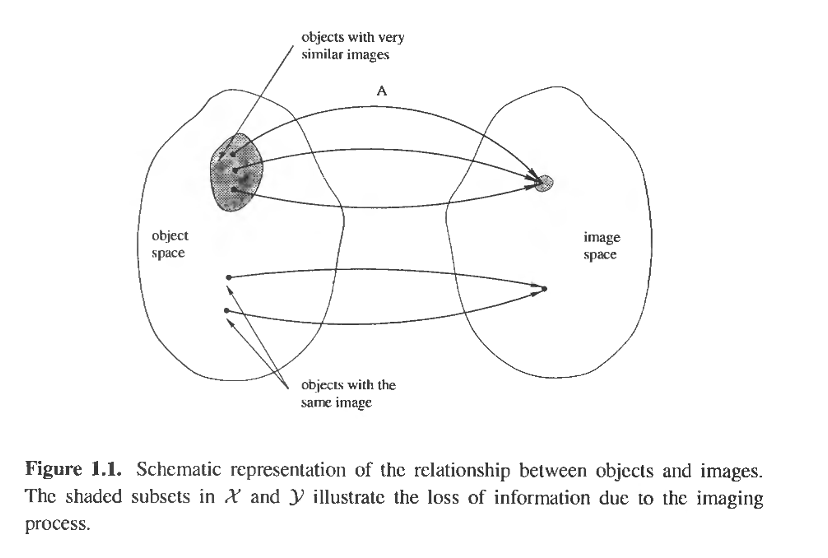
A is a linear operator mapping an image in the Image space X to a noise free image in the image space Y (orange subset).
The set of noise free images is usually called range of A.
It is possible that two or more objects have exactly the same image. It is related with objects whose Image is exactly zero (invisible objects). Given an object in X If we add an invisible object to it we obtain the same image.
It is possible that two distant objects have very similar images.
Solving the linear system $\(Ax=y+e\)$
Is a quite simple numerical task, but in the case of linear inverse ill-posed problems \(A\) is ill-conditioned and the solution of the linear system becomes difficult for at least one of the following three reasons.
Suppose A of size M x N (now we call \(A\) instead of \(K\) the matrix describing the imaging system).
If M=N and A non singular, the system has a unique solution, but usually there is no continuos dependence from the data. This means that a small change in the data produces a great variation in the solution.
If M>N the linear system has no solutions and in place of it we solve the least-squares problem:
If M<N the system has infinite possible solutions. Again we substitute the linear system with a least-squares problem.
The result is that the numerical inversion produces results that are physically unacceptable even if mathematically acceptable
In inverse problems data are always affected by noise and the solution method amplifies that noise, producing a large and wildly oscillating function that completely hides the physical solution corresponding to noise-free data.
Even if the solution of the linear system exists and is unique (case 1.) it is completely corrupted due to the small noise on the data (ill-conditioned system).
{kind=link}
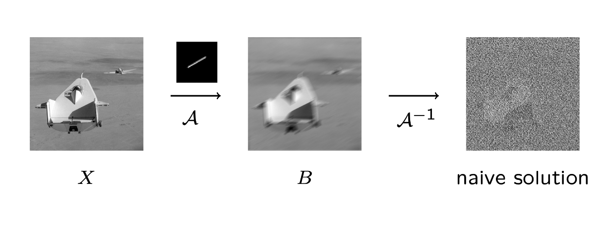
The simple inversion is called the naive solution. As visible from the previous image it is not a good and reliable solution. The noise present on the data is amplified in the solution.
Why the naive approach fails?
Hence the naive image consists of the sum of two images:
The first component x is the exact image
The second component is the inverted noise.
The inverted noise contaminates the exct image x.
We use the Singular Value Decomposition (SVD) of A to analyse the contribution of the inverted noise.
Theorem (SVD decomposition)
Any matrix \(A\) of size \(m \times \) and rank k < min(m,n) can be decomposed as:
where:
U is an orthogonal matrix of size \(m \times m\)
V is an orthogonal matrix of size \(n \times n\)
\(\Sigma\) is a diagonal matrix with diagonal entries: $\( \sigma_1 \geq \sigma_2 \geq \ldots \sigma_k \geq \sigma_{k+1}= \ldots =\sigma_{min(m,n)}=0\)$
If we write in terms of SVD representation:
The naive solution can be written as:
The error components \(u_i^Te\) are small and typically of the same order of magnitude for all \(i\).
The singular vectors corresponding to the smaller singular values typically tend to have more sign changes.
The singular vectors corresponding to the smaller singular values typically represent higher frequency information. That is, as \(i\) increases, the vectors \(u_i\) and \(v_i\) tend to have more sign changes.
{kind=link}
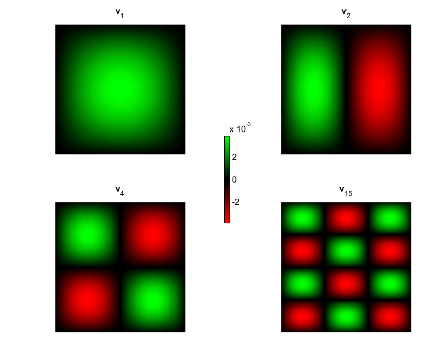
When we divide by a small singular value such as \(\sigma_N\) we greatly magnify the corresponding error component \(u_N^Te\) , which in turn contributes a large multiple of the high frequency information contained in \(v_N\) to the computed solution.
We can examine the coefficents of the naive solution:
The quantities \(\frac{u_i^T y}{\sigma_i}\) are expansion coefficients of the basis vectors \(v_i\).
When these quantities are small in magnitude, the solution has very little contribution from \(v_i\) , but when \(\sigma_i\) is very small, these quantities can be large due to the presence of the noise in the data term \(y+e\).
{kind=link}
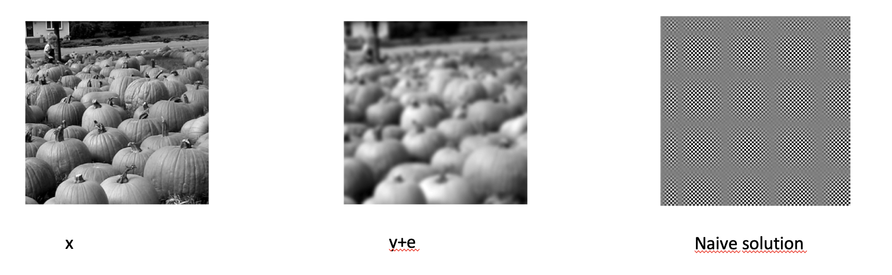